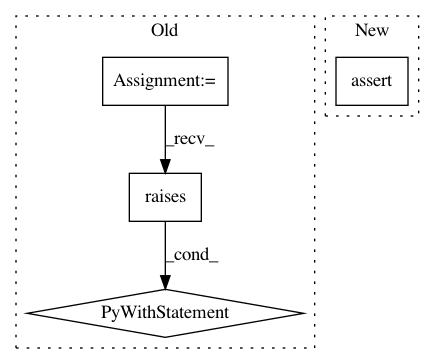

0f4fec30f00b29aa206e36fe875c83ff6149b618,tests/keras/backend/test_backends.py,TestBackend,test_batch_dot_shape,#TestBackend#,84
Before Change
check_single_tensor_operation("reverse", (4, 3, 2), axes=(1, 2))
def test_batch_dot_shape(self):
with pytest.raises(ValueError):
x_batch = KTF.ones(shape=(32, 20))
y_batch = KTF.ones(shape=(32, 20))
xy_batch_dot = KTF.batch_dot(x_batch, y_batch, axes=1)
def test_shape_operations(self):
// concatenate
xval = np.random.random((4, 3))
xth = KTH.variable(xval)
After Change
xy_batch_dot = KTF.batch_dot(x_batch, y_batch, axes=(0, 1))
assert_allclose(KTF.eval(xy_batch_dot), np.ones((20, 1)) * 32, atol=1e-05)
xy_batch_dot = KTF.batch_dot(x_batch, y_batch, axes=(1, 0))
assert_allclose(KTF.eval(xy_batch_dot), np.ones((32, 1)) * 20, atol=1e-05)
def test_shape_operations(self):
// concatenate
xval = np.random.random((4, 3))
In pattern: SUPERPATTERN
Frequency: 5
Non-data size: 4
Instances
Project Name: keras-team/keras
Commit Name: 0f4fec30f00b29aa206e36fe875c83ff6149b618
Time: 2017-02-06
Author: yves@dbtune.org
File Name: tests/keras/backend/test_backends.py
Class Name: TestBackend
Method Name: test_batch_dot_shape
Project Name: keras-team/keras
Commit Name: 98238720ee0f0ed9b9d21c6f9f234206d9e90b9e
Time: 2017-07-31
Author: mrtz.milani@googlemail.com
File Name: tests/keras/backend/backend_test.py
Class Name: TestBackend
Method Name: test_repeat_elements
Project Name: streamlit/streamlit
Commit Name: 0aa2751a9b10f9f38058ba3789608de10e1df2d8
Time: 2020-07-03
Author: akrolsmir@gmail.com
File Name: lib/tests/streamlit/slider_test.py
Class Name: SliderTest
Method Name: test_max_min
Project Name: streamlit/streamlit
Commit Name: 0aa2751a9b10f9f38058ba3789608de10e1df2d8
Time: 2020-07-03
Author: akrolsmir@gmail.com
File Name: lib/tests/streamlit/slider_test.py
Class Name: SliderTest
Method Name: test_value_greater_than_min
Project Name: streamlit/streamlit
Commit Name: 0aa2751a9b10f9f38058ba3789608de10e1df2d8
Time: 2020-07-03
Author: akrolsmir@gmail.com
File Name: lib/tests/streamlit/slider_test.py
Class Name: SliderTest
Method Name: test_value_smaller_than_max